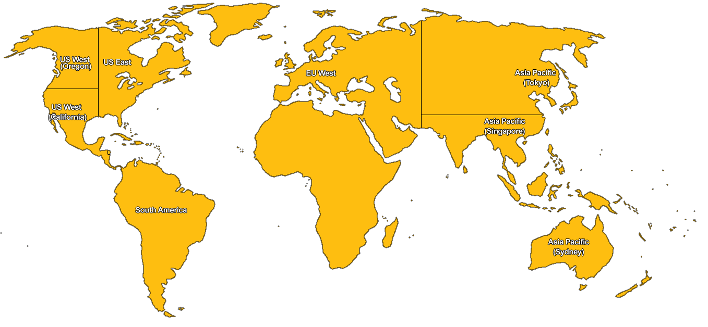
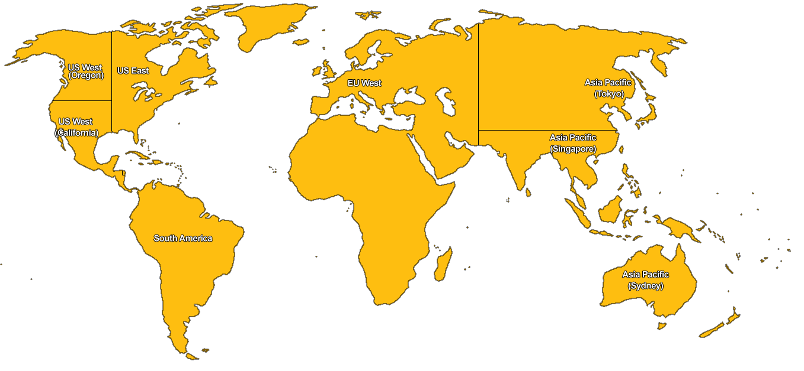

- Hva er AWS?
- 30+ ulike tjenester innenfor virtualisering, database, datalagring/content delivery, applikasjonstjenester++
- Hovedfokus er virtualisering (EC2) og datalagring (S3)
- Tilgjengelig gjennom dashboard, webservices og developer tools (kommandolinje)
- Regioner og soner
-
Husk:
- Elastic Beanstalk
- AWS Free Tier - Gratis tilgang
i et år
Dette var kjapt og overfladisk!
Om noen ønsker mer info eller grundigere gjennomgang, ta kontakt!
Sjekk uansett ut aws.amazon.com